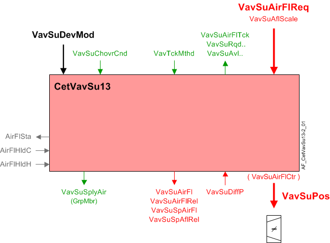

CET 供气 VAV 盒、压力传感器、流量转换 (CetVavSu13)
Overview
应用功能》CET room pressurization supply air VAV box 13, differential pressure sensor, flow conversion, internal air flow controller, air damper" (CetVavSu13）操作阻尼器，使用闭环控制将测量的流量驱动至气流设定点（VavSuSpAirFl）它根据接收到的供暖、制冷和通风需求信号进行计算。当与正确的外围设备结合使用时，它可以控制气流，稳定时间为 1 至 2 秒。还可以将其设置为较慢的操作。
主输出是阻尼器位置的调制输出（VavSuPos）由该 AF 中的 PID 气流控制器生成。
Note
为了计算送风体积流量，该 AF 使用OEM box coefficient和输入来自differential pressure sensor。这意味着CetVavSu13没有空气平衡功能或管道面积计算。
主要特点：
- VAV supply damper modulation for temperature control and ventilation purposes
- Airflow setpoint calculation
- Airflow calculation
- Interlocks (box coils)
- Supply chain interface
Function
下图显示了与此应用程序函数关联的 BACnet 对象。主要信号流程总结如下：
输入信号 VavSuAflScale 和 VavSuAirFlReq 被接收并处理为 VAV 供应风门位置的输出信号（VavSuPos).

| 命令或请求（或相关） |
| 条件或状态或可用性的通知 |
| 设备模式 |
| 互锁（内部信号，不是 BACnet 对象；有关其他信息，请参阅互锁部分） |


Device mode:设备模式的输入信号是多状态值。
VavSuDevMod支持以下状态：
- Off
- Control mode
- Max.air vol.flow
- Min.air vol.flow
- Smoke ctrl.air flow setp.
Available status:当 VAV 供应风门可用于加热、冷却或通风时，指示可用性的相应二进制输出信号（VavSuAvlH, VavSuAvlC, VavSuAvlVnt）将为“是”（可用）。
要使可用状态为“是”，设备模式必须等于“控制模式”（调制），并且 VavSuChovrCnd（送风 VAV 转换条件）不能等于“两者”。
输出信号VavSuAflPvdVnt是可用于通风的空气流量。什么时候VavSuAvlVnt为 True，最大值 (VavSuAflMaxVnt）被转移到VavSuAflPvdVnt.
VavSuAflPvdVnt（VAV 为通风提供的送风流量）是来自送风 VAV 箱的最大流量（以工程单位表示）的总和。这些值在每个供应 VAV 中设置，以获得段中的最大流量。
Airflow control loop (cascade control)
Airflow controller:PID 气流控制器（VavSuAirFlCtr) 将接线盒的气流量与当前 VAV 送风气流设定值进行比较，并进行调节VavSuPos必要时将箱流量保持在设定值。
ABT 5.x and later:
Airflow setpoint selection:AF 计算终端的气流设定值，以满足支持的气流驱动程序之一的需求：
- Heating
- Cooling
- Ventilation
- Make-up
和输入来自3/min, m3/h，l/s）。需求水平与流量范围的映射如图所示。
表示需求水平的对象，（VavSuAirFlReq）和主动驱动器（VavSuAflScale) 是 AF 的输入。它们是由其他函数编写的。终端的气流限制在此处配置。
|
|
冷却 | 加热 |
|
|
通风 | 化妆品 |


That setpoint mapping is normal operation.当设备模式（VavSuDevMod）为控制模式时适用。设备模式的特殊值会更改设定点，如下所示：
- Off – Setpoint is 0 and damper is closed
- Control Mode – Setpoint follows % demand
- Maximum airflow setpoint – Setpoint is maximum for the currently active airflow scale
- Minimum airflow setpoint – Setpoint is minimum for the currently active airflow scale
- Manual airflow setpoint – Setpoint is value configured for smoke control
Supply Air Flow Limits for Air Terminals - Configuration
送风流具有多种功能：加热、冷却、通风和加压。以下部分介绍如何针对不同的用例配置每个电源端子。
Cooling | Heating | Ventilation | |
Single CV (Constant Volume) Supply Terminal | Min = Max = 0（或盘管冷却房间所需的最小流量值） | Min = Max = 0（或盘管加热房间所需的最小流量值） | 最小值 = 0 |
Single VAV (Variable Air Volume) Supply Terminal (no fume hood) | Min = 0（或盘管冷却房间所需的最小流量值） | Min = 0（或盘管加热房间所需的最小流量值） | 最小值 = 0 |
Single VAV Supply Terminal (fume hood) | Min = 0（或盘管冷却房间所需的最小流量值） | Min = 0（或盘管加热房间所需的最小流量值） | 最小通风 = 0 |
检查项目规范，看看各个终端的排序是否彼此不同：它们是否响应不同的需求。如果没有指定差异，请遵循下表的说明。如果每个终端的流量限制设置相同，则它们以相同的流量运行。
Cooling | Heating | Ventilation | |
Multiple Supply Terminals (same size, same function) | Min = 0（或盘管冷却房间所需的最小流量值） | Min = 0（或盘管加热房间所需的最小流量值） | 最小值 = 0 |
检查项目规范，看看各个终端的排序是否彼此不同：它们是否响应不同的需求。如果电源端子尺寸不同但功能相同，请遵循下表的说明。
Cooling | Heating | Ventilation | |
Multiple Supply Terminals (different sizes, same function) | Min = 0（或盘管冷却房间所需的最小流量值） | Min = 0（或盘管加热房间所需的最小流量值） | 最小值 = 0 |
对于具有不同功能的多个供气终端的情况，下表提供了如何配置一个为冷梁提供服务的 CV（恒定风量）终端和一个不带冷却的 VAV（可变风量）终端的示例。
通过 CV 终端的流量不会因加热或冷却而变化。
流量始终通过通风或盘管支持（最小热量或最小冷却）来设置，除非减少流量是维持房间加压的唯一方法。
通过 VAV 终端的流量可能因加热、冷却和通风而异，或为了平衡通风柜流量。
Cooling | Heating | Ventilation | |
Multiple Supply Terminals (different functions) | Min = Max = 0（或盘管冷却房间所需的最小流量值） | Min = Max = 0（或盘管加热房间所需的最小流量值） | 最小值 = 最大值 = 0（或支持加热或冷却盘管所需的值） |
Multiple Supply Terminals (different function) | Min = 0（或盘管冷却房间所需的最小流量值） | Min = 0（或盘管加热房间所需的最小流量值） | 最小值 = 0 |
ABT 4.x and earlier
Airflow setpoint selection:AF 计算终端的气流设定值，以满足支持的气流驱动程序之一的需求：
- Heating
- Cooling
- Ventilation
- Make-up
和输入来自3/min, m3/h，l/s）。需求水平与流量范围的映射如图所示。
|
|
冷却 | 加热 |
|
|
通风 | 化妆品 |


表示需求水平的对象，（VavSuAirFlReq）和主动驱动器（VavSuAflScale) 是 AF 的输入。它们是由其他函数编写的。终端的气流限制在此处配置。
That setpoint mapping is normal operation.当设备模式（VavSuDevMod）为控制模式时适用。设备模式的特殊值会更改设定点，如下所示：
- Off – Setpoint is 0 and damper is closed
- Control Mode – Setpoint follows % demand
- Maximum airflow setpoint – Setpoint is maximum for the currently active airflow scale
- Minimum airflow setpoint – Setpoint is minimum for the currently active airflow scale
- Manual airflow setpoint – Setpoint is value configured for smoke control
Feedback loop:反馈控制器驱动阻尼器的 AO 对象。反馈回路使用流量和设定点的相对值。两个物理值都转换为缩放值的百分比，以便在 PID 循环中使用。这些流量和设定点的相对值被写入计算值对象。 （这与用于表达加热、冷却或通风需求的缩放不同。）使用的缩放值是编程控制序列中预期的最高流量设定点。它是为终端配置的各种最大流量限制中最大的一个：
- cooling maximum flow
- heating maximum flow
- ventilation maximum flow
- nominal flow
Flow sensor failure: 如果气流传感器对象无效（不包括超范围），则流量控制风门位置将根据配置扩展的设置进行设置AirFlFailMod.
- If AirFlFailMod is set to Hold, the damper will stay in the current position.
- If AirFlFailMod is set to Open, the damper position will be set to 100%.
- If AirFlFailMod is set to Close, the damper position will be set to 0%.
当传感器发生故障时，PID 操作将暂停。当传感器状态再次有效时，PID 恢复运行。
当 AI 不可靠时，气流计算会继续，但气流值可能不会改变，因为 AI 的值停止更新。 AF 还设置一个二进制值对象，指示气流数据的正常或故障状态。
Network communication loss: 如果发生网络通信丢失，流量设定值将根据配置扩展的设置进行设置AirFlFailMod.
- If AirFlFailMod is set to Hold, the flow setpoint will stay in the current position.
- If AirFlFailMod is set to Open, the flow setpoint will be set to the maximum flow of the mode the terminal was in during failure.
- If AirFlFailMod is set to Close, the flow setpoint will be set to the minimum flow of the mode the terminal was in during failure.
当网络通信丢失时，流量控制回路继续以上面选择的设定值运行。
Sensor calibration:当气流传感器处于主动校准状态时，闭环流量控制暂停；输出不会改变。校准仅在稳态控制期间进行，而不是在流量设定值变化时进行。
Airflow sensing:AF 根据测得的压差值计算体积气流，并与 OAVS 压力传感器配合使用，其中包括自动归零功能。 AF 不包括将传感器归零的计算或数据。
Low sensor value: 配置设置指定开启点和以压力为单位的滞后值。
Duct area calculation:没有任何。此 AF 没有空气平衡功能。
Interlocks
房间自动化联锁是协调 HVAC 设备之间交互的内部信号。它们在 ABT 站点或 Web 界面中不可见，但与它们关联的参数可见。有关影响联锁功能的参数的提示，请参阅注释列。
信号 | 类型 | 导演。 | 描述 | 评论 |
|---|---|---|---|---|
AirFlCReq | 布尔值 | In | 气流冷却要求 |
|
AirFlHReq | 布尔值 | In | 气流加热要求 |
|
AirFlHldH | 布尔值 | In | 保持气流以加热 |
|
AirFlHldC | 布尔值 | In | 保持气流以进行冷却 |
|
AirFlSta | 布尔值 | 出去 | 气流状态 | 有关名为“...AirFlSta”的参数，请参阅配置部分 |
Supply chain interface: 空气有四个需求输出信号。
- VavSuCDmd - Supply air VAV cooling demand
When device mode is in control, VavSuCDmd is the percentage value of the cooling request from the room (otherwise it is 0). - VavSuHDmd - Supply air VAV heating demand
When device mode is in control, VavSuHDmd is the percentage value of the heating request from the room (otherwise it is 0). - VavSuVntDmd - Supply air VAV ventilation demand
When device mode is in control, VavSuVntDmd is the percentage value of the ventilation request from the room (otherwise it is 0). - VavSuAirDmd - Supply air VAV air demand for plant mode
VavSuAirDmd is a multistate value that equals PltOpMod (VavSuSpAirFl must be greater than the switch-on point for airflow demand, SwiOnAirFlDmd). If PltOpMod is "Emergency Off" or "Smoke Negative Pres.", VavSuAirDmd will equal PltOpMod regardless of VavSuSpAirFl value.
Airflow deviation signal:送风气流偏差（VavSuAirFlDvn) 信号（以百分比表示）用于空气处理机组的风扇速度（静压）重置策略。它是通过测量送风管道的气流并将其与气流设定值进行比较而获得的。
VavSuAirFlDvn = VavSuSpAflRel减VavSuAirFlRel
VavSuAirFlDvn如果条件无效，则等于 0。
Saturation signal:饱和信号VavSuAflStrtn是一个二进制对象，当气流控制回路在超过内置时间延迟的时间内无法获得足够的空气来达到设定点时，该对象为 True（“饥饿”）。
Note
VavSuAflStrtn如果参数始终关闭EnStrtnCal= 0（否）。这允许用户从饱和压力重置系统中排除特定终端。
In order for Saturation Signal to be True:
1. 启用饱和度校准参数必须设置为是 (EnStrtnCal=Yes)
2. VAV控制器的输出必须大于饱和电平(VavEhAirFlCtr>StrtnLvl)
3. 气流误差，即设定值减去气流值，必须大于气流误差限值 (AirFlEr>AirFlErLm)
仅当在 DlyOnStrtn 持续时间内满足所有三个部分时，饱和信号才能为 True。
AHU changeover condition signal:多态 VAV 电源转换条件输入信号 (VavSuChovrCnd）来自房间协调函数（RCoo）。它指示中央 AHU 当前加热/冷却可用状态。如果送风系统不包括转换功能，请勿将该值连接到数据源。将值配置为正常的 AHU 操作状态。默认为冷却。
支持四种状态：
- Neither
- Heating
- Cooling
- Neutral
“中性”意味着加热和冷却 PID 控制器均已启用，并且系统提供的空气不热也不冷。
Configuration
 Objects
Objects
描述 | 目的 | 类型 | 默认值 |
|---|---|---|---|
Supply air VAV smoke control air volume flow setpoint | VavSuSpAflSmk | ACnfVal | 50 [m3/h] |
Supply air VAV box coefficient | VavSuBoxCoef | ACnfVal | 150 [m3/hSqrtPa] |
Supply air VAV maximum air volume flow for cooling | VavSuAirFlMaxC | ACnfVal | 100 [m3/h] |
Supply air VAV minimum air volume flow for cooling | VavSuAirFlMinC | ACnfVal | 50 [m3/h] |
Supply air VAV maximum air volume flow for heating | VavSuAirFlMaxH | ACnfVal | 100 [m3/h] |
Supply air VAV minimum air volume flow for heating | VavSuAirFlMinH | ACnfVal | 50 [m3/h] |
Supply air VAV maximum air volume flow for ventilation | VavSuAflMaxVnt | ACnfVal | 100 [m3/h] |
 Parameters
Parameters
描述 | 范围 | 默认值 |
|---|---|---|
Failure mode for air volume flow sensor ▶ 定义风量流量传感器出现故障时终端如何响应。 ▶还定义了网络通信丢失时终端如何响应。 | AirFlFailMod | 1:Hold supply air |
Switch-on point for differential pressure | SwiOnPtDiffP | 0.2 [Pa] |
Hysteresis for differential pressure | HysDiffP | 0.1 [Pa] |
Time constant for air volume flow | TiConAirFl | 0 [s] |
Switch delay for tracking method to air volume flow | SwiDlyTckMthd | 60 [s] |
Switch tolerance for tracking method to air volume flow | SwiTolTckMthd | 5.0 [%] |
Nominal air volume flow | AirFlNom | 0 [m3/h] |
Enable deviation calculation 0:No | EnDvnCal | 1:Yes |
Enable saturation calculation 0:No | EnStrtnCal | 1:Yes |
Saturation level | StrtnLvl | 90 [%] |
Air volume flow error limit | AirFlErLm | 0 [%] |
Switch-on delay saturation | DlyOnStrtn | 60 [s] |
Switch-on point for air flow demand | SwiOnAirFlDmd | 4 [%] |
Hysteresis for air flow demand | HysAirFlDmd | 2 [%] |
Switch-on point for air volume flow state | SwiOnAirFlSta | 10 [%] |
Hysteresis for air volume flow state | HysAirFlSta | 5 [%] |
Pressure unit | PUnit | [Pa] |
Air volume flow unit | AirFlUnit | [m3/h] |
Interface
界面 | 描述 | 类型 | 参考号 | 拥有者 | |
|---|---|---|---|---|---|
VavSuPos | Supply air VAV position | AO | ◉ | Room segment / Field device | |
VavSuDiffP | Supply air VAV differential pressure | AI | ◉ | Room segment / Field device | |
VavSuSpAirFl | Supply air VAV setpoint for air volume flow | APrcVal | ● | - | |
TrndVavSuAirFl | Trend for supply air VAV air volume flow | FtrSel | ● | - | |
TrndVavSuSpAfl | Trend for supply air VAV setpoint for air volume flow | FtrSel | ● | - | |
VavSuSpAflRel | Supply air VAV setpoint for relative air volume flow | ACalcVal | ● | - | |
VavSuAirFl | Supply air VAV air volume flow | ACalcVal | ● | - | |
VavSuAirFlRel | Supply air VAV relative air volume flow | ACalcVal | ● | - | |
VavSuAirFlDvn | Supply air VAV air volume flow deviation | ACalcVal | ● | - | |
VavSuAflStrtn | Supply air VAV air volume flow saturation 0:Satisfied | BCalcVal | ● | - | |
VavSuDevMod | Supply air VAV device mode 1:Off | MPrcVal | ● | - | |
VavSuAirFlCtr | Supply air VAV air flow controller | 控制器 | ● | - | |
VavSuAirFlReq | Supply air VAV air volume flow request | ACalcVal | ● | - | |
VavSuAflScale | Supply air VAV air volume flow scale 1:Heating | MCalcVal | ● | - | |
VavSuRqdC | Supply air VAV required for cooling 0:Off | BCalcVal | ● | - | |
VavSuRqdH | Supply air VAV required for heating 0:Off | BCalcVal | ● | - | |
VavSuAvlC | Supply air VAV available for cooling 0:No | BCalcVal | ● | - | |
VavSuAvlH | Supply air VAV available for heating 0:No | BCalcVal | ● | - | |
VavSuAvlVnt | Supply air VAV available for ventilation 0:No | BCalcVal | ● | - | |
VavSuChovrCnd | Supply air VAV changeover condition 1:Neither | MPrcVal | ● | - | |
VavSuAirDmd | Supply air VAV air demand for plant mode 1:Off | MCalcVal | ● | - | |
VavSuAirFlRlf | Supply air VAV air volume flow relief 0:Off | BPrcVal | ● | - | |
VavSuCDmd | Supply air VAV cooling demand | ACalcVal | ● | - | |
VavSuHDmd | Supply air VAV heating demand | ACalcVal | ● | - | |
VavSuVntDmd | Supply air VAV ventilation demand | ACalcVal | ● | - | |
VavSuAirFlTck | Supply air VAV air volume flow tracking | ACalcVal | ● | - | |
VavTckMthd | VAV tracking method 1:Setpoint | McalcVal | ● | - | |
CdnMsgCol | Collection of condensation message | ColView | ● | - | |
| CdnMsgRs | Result of condensation message 0:Normal | BCalcVal | ● | - |
CdnMsg | Condensation message 枚举见CdnMsgRs | BCalcVal | ◉ | CcgChw11 / HCcg2Pipe11 / HCcg4Pipe11 / HCcg4Pipe13 | |
CclCdnMsg | Cooling coil condensation message 枚举见CdnMsgRs | BCalcVal | ◉ | CclChw13 | |
VavSuSplyAir | Supply air VAV supply chain for air | GrpMbr | ● | - | |
VavSuSpAflSmk | Supply air VAV smoke control air volume flow setpoint | ACnfVal | ● | - | |
VavSuBoxCoef | Supply air VAV box coefficient | ACnfVal | ● | - | |
VavSuAirFlMaxC | Supply air VAV maximum air volume flow for cooling | ACnfVal | ● | - | |
VavSuAirFlMinC | Supply air VAV minimum air volume flow for cooling | ACnfVal | ● | - | |
VavSuAirFlMaxH | Supply air VAV maximum air volume flow for heating | ACnfVal | ● | - | |
VavSuAirFlMinH | Supply air VAV minimum air volume flow for heating | ACnfVal | ● | - | |
VavSuAflMaxVnt | Supply air VAV maximum air volume flow for ventilation | ACnfVal | ● | - | |
Engineering and commissioning
检查风门执行器安装是否正确。执行器接线错误或安装不当是常见问题的主要原因。
相对空气流量 (VavSuAirFlRel) 根据箱体空气流量 (AirFlNom) 的标称（额定）值标准化为 VavSuAirFl 的百分比 (0 - 100%)。